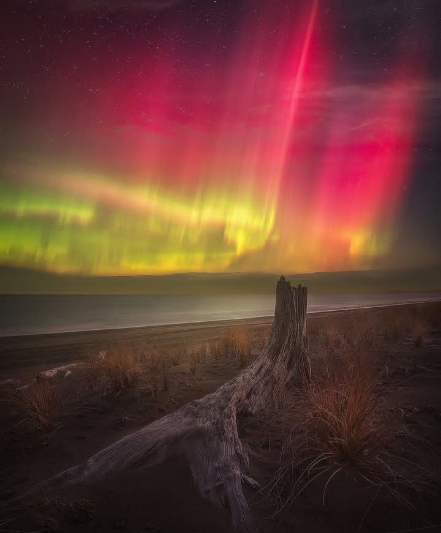
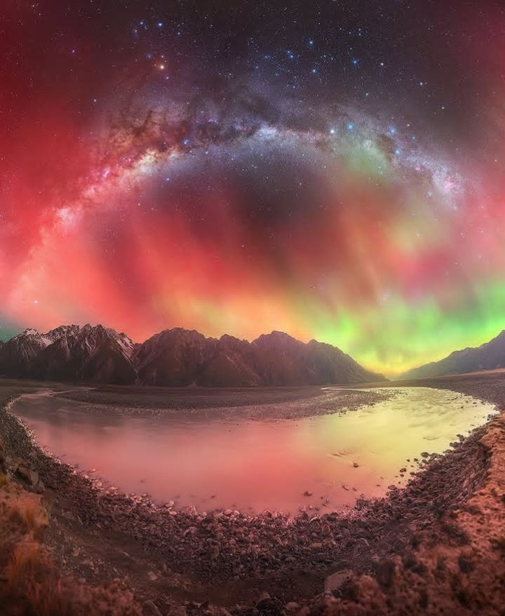

Find the best locations worldwide for observing astronomical events.
Explore some of the world's top stargazing destinations, ensuring you get the best possible experience under the stars.

Plan your next adventure with our curated maps hilighting prime spots for cosmic events across the globe.
